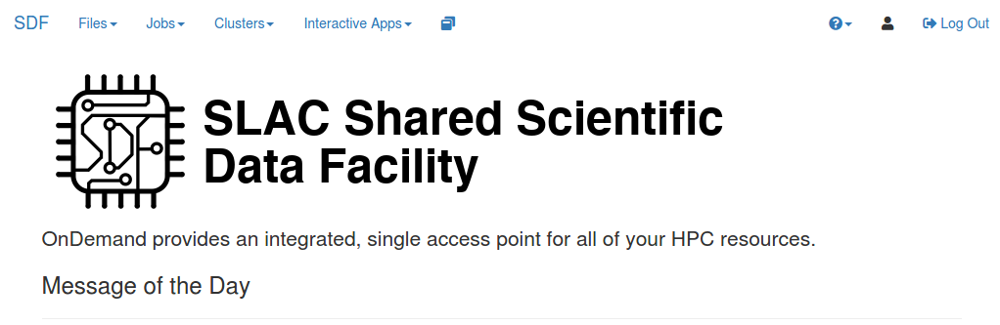

Set up your computing environment¶
Please read and follow the below steps as soon as you can so that we can ensure that we run into minimal issues on the day of the classes. If you have any problems, feel free to email Kazu or to contact us on the Slack channel.
Accounts and Access¶
The SLAC Shared Scientific Data Facility (SDF) is a computing cluster at SLAC Accelerator National Laboratory. It is specifically designed for the need of the Machine Learning community at SLAC. We shall be using SDF for this workshop!
We have prepared a temporary computing account for every participant. Everyone should have received the account information (user name and password) by an email. Please do not share your user name nor password with anyone else.
Getting started¶
Below is an instruction for how to log into a computing server prepared for the workshop, and the basics of how to use Jupyter lab, a browser-based application to navigate through SLAC computing environment.
Texts are not always the best way to explain, so I also recorded movies for each section.
1. Login¶
Follow the instruction below and/or movie.
Goto https://sdf.slac.stanford.edu in your web browser (sorry, Safari not supported). You are more than welcome to browse the documentation, but it is not necessarily.
Click on the “Login” button
You will be presented with a CILogon screen. Select SLAC National Accelerator Laboratory from the drop down list.
If you selected another authentication other than SLAC, you may be presented with an error message sayng that your user name could not be mapped. To rectify this, you will need to logout (click this link) and try again.
The standard SLAC single-sign-on-page will be presented: enter your user name and password provided in an email.
You should be presented with the ‘ondemand’ frontend that looks like below.
{kind=link}
2. Launch jupyter¶
Follow the instruction below and/or movie.
at the top of the ‘ondemand’ webpage that we just logged into, click on ‘Interactive Apps’
Select ‘Jupyter’ from the list
You should be presented with a set of options to launch a Jupyter instance
{kind=link}
For the purposes of this school, select
Jupyter Instance:
ml-at-slac/school-2020-09Check “Use JupyterLab”
Partition:
mlNumber of hours:
12Number of CPU cores:
4Total Memory to allocate:
19200Number of GPUs:
1GPU Type:
Nvidia Geforce 2080TiLeave unchecked “I would like to receive an email when the session starts”
This email goes to one of my colleagues, not your email, as it is a temporary account
Click on the big blue ‘Launch’ button at the bottom.
If you get an error like sbatch: error: Batch job submission failed: Invalid account or account/partition combination specified, this means that you do not have permissions to use the ml partition in slurm. Contact Kazu of one of TAs on the Slack channel. While this problem persists, you can use the shared partition instead (or whichever you may be a part of).
If successful, that should bring you to “Interactive Sessions” page like below.
{kind=link}
After a few moments, the webpage should update with a ‘Connect to Jupyter Instance’ button
{kind=link}
clicking on this will bring up a Jupyter window. That should bring you to Jupyter homepage.
{kind=link}
3. Verify it works¶
Follow the instruction below and/or movie.
Start a python interpreter console from the launcher
{kind=link}
That should open a python interpreter console. You should see a screen like below.
{kind=link}
You can type python commands in the bottom cell. Type the following 2 lines of command:
import torch
print(torch.Tensor([0.]).cuda().device)
… and execute the cell (you can hit “shift+enter” on your keyboard). You should see the output on the screen:
cuda: 0
If you see any error, please contact Kazu.
4. Preparing the workshop materials¶
Follow the instruction below and/or movie.
Next, let’s checkout the code repository we will use for the workshop! Open a launcher tab by clicking “+” sign on the top of the file browser (on the left).
{kind=link}
Then choose a Terminal app and launch. You should see a terminal opened.
{kind=link}
In the terminal, type the command below
git clone https://github.com/drinkingkazu/slacml-kmi2020
… and execute (hit enter key). You should see the following outputs.
It should look like below (and again, if not, hit Kazu!).
{kind=link}
Now on your file browser on the left, you should see
slacml-kmi2020appeared! You can double-click to navigate through the directories and files. Go to theslacml-kmi2020/Prerequisitesdirectory. You should see a list of notebooks to be completed prior to the workshop. Make sure you can execute all notebooks in this environment. If you double-clickPython-01-Jupyter.ipynb, you should see something like below.
{kind=link}
5. Party!¶
Congrats! You have your computing instance up and running = ready for the workshop … hardware-wise :)
We assume some minimal knowledge about Python and scientific libraries. You just checked out the workshop repository, so you can go there and explore ~/slacml-kmi2020/Prerequisites directory, or read it online. There are notebooks named Python-0X-YYY.ipynb. Start from 01 and try to look at look at all of them. You can execute all notebooks and see what happens. Modify and observe a difference in behavior. Again, hit Kazu for questions!